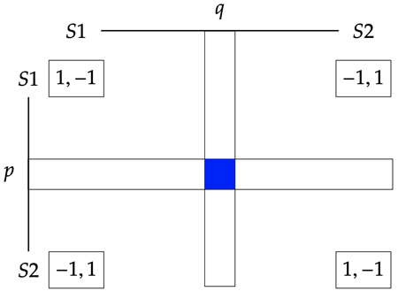

Game Theory¶
A game refers to any interactive situation involving a group of “self-interested” agents, or players. The defining feature of a game is that the players are engaged in an “interdependent decision problem”.
# make graphs look nice
import seaborn as sns
sns.set()
The mathematical description of a game includes at least the following components:
The players. In this entry, we only consider games with finitely many players. We use \(N\) to denote the set of players in a game.
For each player \(i\in N\), a finite set of feasible options (typically called actions or strategies).
For each player \(i\in N\), a preference over the possible outcomes of the game. The standard approach in game theory is to represent each player’s preference as a (von Neumann-Morgenstern) utility function that assigns a real number to each outcome of the game.
A game may represent other features of the strategic situation. For instance, some games represent multi-stage decision problems which may include simultaneous or stochastic moves. For simplicity, we start with games that involve players making a single decision simultaneously without stochastic moves.
A game in strategic form is a tuple \(\langle N, (S_i)_{i\in N}, (u_i)_{i\in N}\rangle\) where:
\(N\) is a finite non-empty set
For each \(i\in N\), \(S_i\) is a finite non-empty set
For each \(i\in N\), \(u_i:\times_iS_i \rightarrow\mathbb{R}\) is player \(i\)’s utility.
The elements of \(\Pi_{i\in N} S_i\) are the outcomes of the game and are called strategy profiles.
In most games, no single player has total control over which outcome will be realized at the end of the interaction. The outcome of a game depends on the decisions of all players.
The central analytic tool of classical game theory are solution concepts. A solution concept associates a set of outcomes (i.e., a set of strategy profiles) with each game (from some fixed class of games).
From a prescriptive point of view, a solution concept is a recommendation about what the players should do in a game, or about what outcomes can be expected assuming that the players choose rationally. From a predictive point of view, solution concepts describe what the players will actually do in a game.
Nash Equilibrium¶
Let \(G=\langle N, (S_i)_{i\in N}, (u_i)_{i\in N}\rangle\) be a finite strategic game (each \(S_i\) is finite and the set of players \(N\) is finite).
A strategy profile is an element \(\times_{i\in N} S_i\)
Given a strategy profile \(\sigma\in \times_{i\in N}S_i\), \(\sigma_{-i}\) is an element of $\( S_1\times S_2\times\cdots S_{i-1}\times S_{i+1}\times \cdots S_n\)$
A strategy profiel \(\sigma\) is a pure strategy Nash equilibrium provided that for all \(i\in N\), for all \(a\in S_i\), $\(u_i(\sigma) \ge u_i(a, \sigma_{-i})\)$
Pure Coordination Game¶
|
\(S1\) |
\(S2\) |
|---|---|---|
\(S1\) |
\((1, 1)\) |
\((0, 0)\) |
\(S2\) |
\((0, 0)\) |
\((1, 1)\) |
There are two pure strategy Nash equilibria: \((S1, S1)\) and \((S2, S2)\)
The basic intellectual premise, or working hypothesis, for rational players in this game seems to be the premise that some rule must be used if success is to exceed coincidence, and that the best rule to be found, whatever its rationalization, is consequently a rational rule. (T. Schelling, The Strategy of Conflict, pg. 283)
Hi-Lo Game¶
|
\(S1\) |
\(S2\) |
|---|---|---|
\(S1\) |
\((3, 3)\) |
\((0, 0)\) |
\(S2\) |
\((0, 0)\) |
\((1, 1)\) |
There are two pure strategy Nash equilibria: \((S1, S1)\) and \((S2, S2)\)
There are these two broad empirical facts about Hi-Lo games, people almost always choose [\(S1\)] and people with common knowledge of each other’s rationality think it is obviously rational to choose [\(S1\)].” (M. Bacharach, Beyond Individual Choice, p. 42)
Matching Pennies¶
|
\(S1\) |
\(S2\) |
|---|---|---|
\(S1\) |
\((1, -1)\) |
\((-1, 1)\) |
\(S2\) |
\((-1, 1)\) |
\((1, -1)\) |
There are no pure strategy Nash equilibria.
A mixed strategy for player \(i\) in a finite game \(\langle N, (S_i)_{i\in N}, (u_i)_{i\in N}\rangle\) is a lottery on \(S_i\), i.e., a probability over player \(i\)’s strategies.

The utilities for a mixed strategy profile \((p, q)\) is:
We are reluctant to believe that our decisions are made at random. We prefer to be able to point to a reason for each action we take. Outside of Las Vegas we do not spin roulettes. (A. Rubinstein, Comments on the Interpretation of Game Theory, Econometrica 59, 909 - 924, 1991)
What does it mean to play a mixed strategy?
Randomize to confuse your opponent (e.g., matching pennies games)
Players randomize when they are uncertain about the other’s action (e.g., battle of the sexes game)
Mixed strategies are a concise description of what might happen in repeated play
Mixed strategies describe population dynamics: After selecting 2 agents from a population, a mixed strategy is the probability of getting an agent who will play one pure strategy or another.
|
\(S1\) |
\(S2\) |
|---|---|---|
\(S1\) |
\((1, -1)\) |
\((-1, 1)\) |
\(S2\) |
\((-1, 1)\) |
\((1, -1)\) |
There is one mixed strategy Nash equilibria: \(((1/2: S1, 1/2: S2), (1/2:S1, 1/2:S2))\).
Battle of the Sexes¶
|
\(S1\) |
\(S2\) |
|---|---|---|
\(S1\) |
\((2, 1)\) |
\((0, 0)\) |
\(S2\) |
\((0, 0)\) |
\((1, 2)\) |
There are two pure strategy Nash equilibrium \((S1, S1)\) and \((S2, S2)\) (and one mixed strategy Nash equilibrium).
Stag Hunt¶
|
\(S1\) |
\(S2\) |
|---|---|---|
\(S1\) |
\((3, 3)\) |
\((0, 2)\) |
\(S2\) |
\((2, 0)\) |
\((1, 1)\) |
There are two pure strategy Nash equilibrium \((S1, S1)\) and \((S2, S2)\). While \((S1, S1)\) Pareto dominates \((S1, S1)\), but \((S2, S2)\) is ‘less risky’.
The problem of instituting, or improving, the social contract can be thought of as the problem of moving from riskless hunt hare equilibrium to the risky but rewarding stag hunt equilibrium. (B. Skyrms, Stag Hunt and the Evolution of Social Structure, p. 9)
Prisoner’s Dilemma¶
|
\(S1\) |
\(S2\) |
|---|---|---|
\(S1\) |
\((3, 3)\) |
\((0, 4)\) |
\(S2\) |
\((4, 0)\) |
\((1, 1)\) |
There is one Nash equilibrium \((S2, S2)\). The non-equilibrium \((S1, S1)\) Pareto-dominates \((S2, S2)\).
Game theorists think it just plain wrong to claim that the Prisoners’ Dilemma embodies the essence of the problem of human cooperation. On the contrary, it represents a situation in which the dice are as loaded against the emergence of cooperation as they could possibly be. If the great game of life played by the human species were the Prisoner’s Dilemma, we wouldn’t have evolved as social animals!….No paradox of rationality exists. Rational players don’t cooperate in the Prisoners’ Dilemma, because the conditions necessary for rational cooperation are absent in this game. (K. Binmore, Natural Justice, p. 63)
Game Theory in Python¶
Gambit - https://gambitproject.readthedocs.io/en/latest/index.html: a library of game theory software and tools for the construction and analysis of finite extensive and strategic games.
Nashpy - https://nashpy.readthedocs.io/en/latest/: a simply library used for the computation of equilibria in 2 player strategic form games.
Axelrod - https://axelrod.readthedocs.io/en/stable/index.html: a library to study iterated prisoner’s dilemma.
Nashpy¶
import nashpy as nash
import numpy as np
# Coordination Game
A = np.array([[1, 0], [0, 1]])
B = np.array([[1, 0], [0, 1]])
coord = nash.Game(A, B)
print(coord)
Bi matrix game with payoff matrices:
Row player:
[[1 0]
[0 1]]
Column player:
[[1 0]
[0 1]]
sigma1_r = [1, 0]
sigma1_c = [0, 1]
print("The utilities are ", coord[sigma1_r, sigma1_c])
sigma2_r = [1 / 2, 1 / 2]
sigma2_c = [1 / 2, 1 / 2]
print("The utilities are ", coord[sigma2_r, sigma2_c])
eqs = coord.support_enumeration()
print("The Nash equilibria are:")
for ne in eqs:
print("\t", ne)
The utilities are [0 0]
The utilities are [0.5 0.5]
The Nash equilibria are:
(array([1., 0.]), array([1., 0.]))
(array([0., 1.]), array([0., 1.]))
(array([0.5, 0.5]), array([0.5, 0.5]))
# Hi-Lo
A = np.array([[3, 0], [0, 1]])
B = np.array([[3, 0], [0, 1]])
hilo = nash.Game(A, B)
eqs = hilo.support_enumeration()
print("The Nash equilibria for Hi-Lo are:")
for ne in eqs:
print("\t", ne)
The Nash equilibria for Hi-Lo are:
(array([1., 0.]), array([1., 0.]))
(array([0., 1.]), array([0., 1.]))
(array([0.25, 0.75]), array([0.25, 0.75]))
# Battle of the Sexes
A = np.array([[2, 0], [0, 1]])
B = np.array([[1, 0], [0, 2]])
bos = nash.Game(A, B)
eqs = bos.support_enumeration()
print("The Nash equilibria for Battle of the Sexes are:")
for ne in eqs:
print("\t", ne)
The Nash equilibria for Battle of the Sexes are:
(array([1., 0.]), array([1., 0.]))
(array([0., 1.]), array([0., 1.]))
(array([0.66666667, 0.33333333]), array([0.33333333, 0.66666667]))
# Stag Hunt
A = np.array([[3, 0], [2, 1]])
B = np.array([[3, 2], [0, 1]])
sh = nash.Game(A, B)
eqs = sh.support_enumeration()
print("The Nash equilibria for the Stag Hunt are:")
for ne in eqs:
print("\t", ne)
The Nash equilibria for the Stag Hunt are:
(array([1., 0.]), array([1., 0.]))
(array([0., 1.]), array([0., 1.]))
(array([0.5, 0.5]), array([0.5, 0.5]))
# Prisoner's Dilemma
A = np.array([[3, 0], [4, 1]])
B = np.array([[3, 4], [0, 1]])
pd = nash.Game(A, B)
eqs = pd.support_enumeration()
print("The Nash equilibria for the Prisoner's Dilemma are:")
for ne in eqs:
print("\t", ne)
The Nash equilibria for the Prisoner's Dilemma are:
(array([0., 1.]), array([0., 1.]))
Axelrod¶
import axelrod as axl
players = (axl.Cooperator(), axl.Alternator())
match = axl.Match(players, 5)
print("Match Play: ", match.play())
print("Match Scores: ", match.scores())
print("Final Scores: ", match.final_score())
print("Final Scores Per Turn: ", match.final_score_per_turn())
print("Winner: ", match.winner())
print("Cooperation: ", match.cooperation())
print("Normalized Coperation: ", match.normalised_cooperation())
Match Play: [(C, C), (C, D), (C, C), (C, D), (C, C)]
Match Scores: [(3, 3), (0, 5), (3, 3), (0, 5), (3, 3)]
Final Scores: (9, 19)
Final Scores Per Turn: (1.8, 3.8)
Winner: Alternator
Cooperation: (5, 3)
Normalized Coperation: (1.0, 0.6)
players = (axl.Cooperator(), axl.Random())
match = axl.Match(players=players, turns=10, noise=0.2)
match.play()
print("Match Scores: ", match.scores())
print("Final Scores: ", match.final_score())
print("Final Scores Per Turn: ", match.final_score_per_turn())
print("Winner: ", match.winner())
print("Cooperation: ", match.cooperation())
print("Normalized Coperation: ", match.normalised_cooperation())
Match Scores: [(1, 1), (0, 5), (0, 5), (3, 3), (3, 3), (0, 5), (1, 1), (1, 1), (0, 5), (0, 5)]
Final Scores: (9, 34)
Final Scores Per Turn: (0.9, 3.4)
Winner: Random: 0.5
Cooperation: (7, 2)
Normalized Coperation: (0.7, 0.2)
Running a Tournament¶
import pprint
players = [axl.Cooperator(), axl.Defector(),
axl.TitForTat(), axl.Grudger()]
tournament = axl.Tournament(players)
results = tournament.play(progress_bar=False)
print("Ranked players: ", results.ranked_names)
print("Normalized Scores: ", results.normalised_scores )
print("Wins: ", results.wins)
print("payoff matrix")
pprint.pprint(results.payoff_matrix);
Ranked players: ['Defector', 'Tit For Tat', 'Grudger', 'Cooperator']
Normalized Scores: [[2.0, 2.0, 2.0, 2.0, 2.0, 2.0, 2.0, 2.0, 2.0, 2.0], [2.3466666666666662, 2.3466666666666662, 2.3466666666666662, 2.3466666666666662, 2.3466666666666662, 2.3466666666666662, 2.3466666666666662, 2.3466666666666662, 2.3466666666666662, 2.3466666666666662], [2.3316666666666666, 2.3316666666666666, 2.3316666666666666, 2.3316666666666666, 2.3316666666666666, 2.3316666666666666, 2.3316666666666666, 2.3316666666666666, 2.3316666666666666, 2.3316666666666666], [2.3316666666666666, 2.3316666666666666, 2.3316666666666666, 2.3316666666666666, 2.3316666666666666, 2.3316666666666666, 2.3316666666666666, 2.3316666666666666, 2.3316666666666666, 2.3316666666666666]]
Wins: [[0, 0, 0, 0, 0, 0, 0, 0, 0, 0], [3, 3, 3, 3, 3, 3, 3, 3, 3, 3], [0, 0, 0, 0, 0, 0, 0, 0, 0, 0], [0, 0, 0, 0, 0, 0, 0, 0, 0, 0]]
payoff matrix
[[3.0, 0.0, 3.0, 3.0],
[5.0, 1.0, 1.02, 1.02],
[3.0, 0.9949999999999999, 3.0, 3.0],
[3.0, 0.9949999999999999, 3.0, 3.0]]
plot = axl.Plot(results)
plot.boxplot();
plot.winplot();
players = [axl.Cooperator(), axl.Defector(),
axl.TitForTat(), axl.Grudger(), axl.Random()]
tournament = axl.Tournament(players)
results = tournament.play(progress_bar=False)
print(results.ranked_names)
plot = axl.Plot(results)
plot.boxplot();
['Defector', 'Grudger', 'Tit For Tat', 'Cooperator', 'Random: 0.5']

p = plot.winplot()
plot.payoff();

Axelrod’s Tournament¶
In 1980, Robert Axelrod (a political scientist) invited submissions to a computer tournament version of an iterated prisoners dilemma (“Effective Choice in the Prisoner’s Dilemma”).
15 strategies submitted.
Round robin tournament with 200 stages including a 16th player who played randomly.
The winner (average score) was in fact a very simple strategy: Tit For Tat. This strategy starts by cooperating and then repeats the opponents previous move.
The fact that Tit For Tat won garnered a lot of (still ongoing) research. For an overview o of how to use axelrod to reproduce this first tournament, see http://axelrod.readthedocs.io/en/stable/reference/overview_of_strategies.html#axelrod-s-first-tournament.
axelrod_first_tournament = [s() for s in axl.axelrod_first_strategies]
number_of_strategies = len(axelrod_first_tournament)
for player in axelrod_first_tournament:
print(player)
Tit For Tat
First by Tideman and Chieruzzi: (D, D)
First by Nydegger
First by Grofman
First by Shubik
First by Stein and Rapoport: 0.05: (D, D)
Grudger
First by Davis: 10
First by Graaskamp: 0.05
First by Downing
First by Feld: 1.0, 0.5, 200
First by Joss: 0.9
First by Tullock
First by Anonymous
Random: 0.5
tournament = axl.Tournament(
players=axelrod_first_tournament,
turns=200,
repetitions=5,
seed = 1,
)
results = tournament.play(progress_bar=False)
for name in results.ranked_names:
print(name)
First by Stein and Rapoport: 0.05: (D, D)
First by Grofman
First by Shubik
Tit For Tat
First by Nydegger
First by Tideman and Chieruzzi: (D, D)
Grudger
First by Davis: 10
First by Graaskamp: 0.05
First by Downing
First by Feld: 1.0, 0.5, 200
First by Tullock
First by Joss: 0.9
First by Anonymous
Random: 0.5
plot = axl.Plot(results)
plot.boxplot();

There are over 200 strategies implemented in axelrod (see https://axelrod.readthedocs.io/en/stable/reference/all_strategies.html). Including some recent strategies that have done quite well in tournaments:
Press, William H. and Freeman J. Dyson (2012), Iterated prisoner’s dilemma contains strategies that dominate any evolutionary opponent. Proceedings of the National Academy of Sciences, 109, 10409–10413.
Moran Process¶
Given an initial population of players, the population is iterated in rounds consisting of:
matches played between each pair of players, with the cumulative total scores recorded.
a player is chosen to reproduce proportional to the player’s score in the round.
a player is chosen at random to be replaced.
players = [axl.Cooperator(), axl.Defector(), axl.TitForTat(), axl.Grudger()]
mp = axl.MoranProcess(players, turns=100)
mp.play()
print("Winning strategy: ", mp.winning_strategy_name)
mp.populations_plot();
Winning strategy: Tit For Tat

Moran Process with Mutation¶
players = [axl.Cooperator(), axl.Defector(),
axl.TitForTat(), axl.Grudger()]
mp = axl.MoranProcess(players, turns=100, mutation_rate=0.1)
for _ in mp:
if len(mp.population_distribution()) == 1:
break
mp.populations_plot();

Local Interactions¶
Fix a 2x2 game. Each agent plays this game with her neighbors in a network.
At each step:
One agent (the focal agent) is chosen at random to adopt a new strategy
The focal agent chooses a new strategy based on how well her neighbors perform in the game:
imitation: imitate the neighbor with the highest total score for that roundprob_imitation: select a neighbor to imitate proportional to the average payouts
from mesa import Model, Agent
from mesa.time import RandomActivation
from mesa.space import SingleGrid
from mesa.datacollection import DataCollector
import random
import matplotlib.pyplot as plt
from IPython.display import clear_output
from ipywidgets import widgets, interact, interact_manual
import seaborn as sns
import numpy as np
import pandas
# Create some games:
A = np.array([[3, 0], [4, 1]])
B = np.array([[3, 4], [0, 1]])
pd = nash.Game(A, B)
#print(pd)
A = np.array([[3, 0], [6, 1]])
B = np.array([[3, 6], [0, 1]])
pd2 = nash.Game(A, B)
#print(pd2)
A = np.array([[1, 0], [0, 1]])
B = np.array([[1, 0], [0, 1]])
coord = nash.Game(A, B)
#print(coord)
A = np.array([[2, 0], [0, 1]])
B = np.array([[2, 0], [0, 1]])
hilo = nash.Game(A, B)
#print(hilo)
A = np.array([[2, 0], [0, 1]])
B = np.array([[1, 0], [0, 2]])
bos = nash.Game(A, B)
#print(bos)
A = np.array([[4, 1], [3, 2]])
B = np.array([[4, 3], [1, 2]])
sh = nash.Game(A, B)
#print(sh)
A = np.array([[9, 0], [8, 7]])
B = np.array([[9, 8], [0, 7]])
sh2 = nash.Game(A, B)
#print(str(sh2))
# fix two strategies
S1 = np.array([1, 0])
S2 = np.array([0, 1])
class Player(Agent):
'''
A player for a game
'''
def __init__(self, unique_id, pos, model, strat):
super().__init__(unique_id, model)
self.pos = pos
self.strat = strat # fixed strategy to play in the game
def average_payout(self):
'''find the average payout when playing the game against all neighbors'''
neighbors = self.model.grid.neighbor_iter(self.pos)
return np.average([self.model.game[self.strat, n.strat][0] for n in neighbors])
def total_payout(self):
'''find the total payout when playing the game against all neighbors'''
neighbors = self.model.grid.neighbor_iter(self.pos)
return np.sum([self.model.game[self.strat, n.strat][0] for n in neighbors])
class GameLatticeModel(Model):
'''
Play a fixed game on a lattice.
'''
def __init__(self, height, width, game, bias_S1, num_changes_per_step, mutation, update_type):
self.height = height
self.width = width
self.game = game
self.bias_S1 = bias_S1
self.update_type = update_type
self.num_changes_per_step = num_changes_per_step
self.mutation = mutation
self.schedule = RandomActivation(self)
self.grid = SingleGrid(height, width, torus=True)
self.datacollector = DataCollector(
{"Percent S1": lambda m: np.sum([1 for a in m.schedule.agents if np.array_equal(a.strat, S1)]) / m.schedule.get_agent_count()} )
self.running = True
# Set up agents
agent_id = 0
for cell in self.grid.coord_iter():
_,x,y = cell
strat = S1 if random.random() < self.bias_S1 else S2
agent = Player(agent_id, (x, y), self, strat)
self.grid.position_agent(agent, x=x, y=y)
self.schedule.add(agent)
agent_id += 1
def step(self):
for i in range(self.num_changes_per_step):
# choose a random agent
focal_agent = np.random.choice(self.schedule.agents)
# find all the neighbors of the agent
neighbors = self.grid.get_neighbors(focal_agent.pos, moore=True)
if self.update_type == 'imitator':
# imitate most successful neighbor
total_payouts = {a: a.total_payout() for a in neighbors}
max_payout = max(total_payouts.values())
strat_to_imitate = [a.strat for a in total_payouts.keys() if total_payouts[a] == max_payout][0]
if self.update_type == 'prob_imitator':
# get the average payouts for each neighbor
average_payouts = [a.average_payout() for a in neighbors]
total_average_payouts = np.sum(average_payouts)
# probabilities for each neighbor
neighbor_probs = [n.average_payout() / total_average_payouts for n in neighbors]
# probabilistically imitate most successful neighbor
strat_to_imitate = np.random.choice(neighbors, 1, p=neighbor_probs)[0].strat
# mutations
other_strat = S2 if np.array_equal(strat_to_imitate, S1) else S1
if random.random() < self.mutation:
focal_agent.strat = other_strat
else:
focal_agent.strat = strat_to_imitate
self.datacollector.collect(self)
# stop running if all agents have the same strategy
if all([np.array_equal(a.strat, S1) for a in self.schedule.agents]) or all([np.array_equal(a.strat, S2) for a in self.schedule.agents]):
self.running=False
## Visualization
height, width = 20, 20
game = pd
bias_S1 = 0.5
mutation = 0.0
update_type = 'prob_imitator'
num_changes_per_step = 100
model = GameLatticeModel(height, width,
game, bias_S1,
num_changes_per_step,
mutation, update_type)
def value(c):
if np.array_equal(c.strat, S1): return 0
elif np.array_equal(c.strat, S2): return 1
fig, ax = plt.subplots()
for i in range(50):
# initialize the model
model.step()
data = np.array([[value(c) for c in row] for row in model.grid.grid])
df = pandas.DataFrame(data)
sns.heatmap(df, cbar=False, linecolor='white', cmap=['blue', 'red'])
ax.axes.get_xaxis().set_visible(False)
ax.axes.get_yaxis().set_visible(False)
clear_output(wait=True)
if not model.running:
break
display(fig);

model_out = model.datacollector.get_model_vars_dataframe()
model_out.plot();